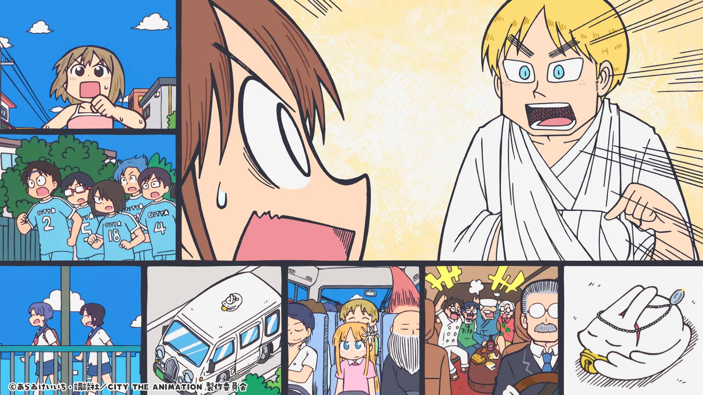
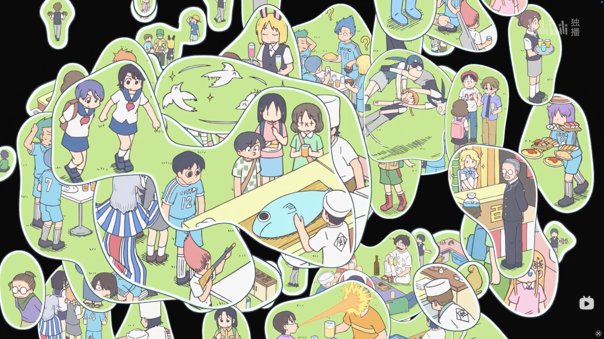

本文首发于机核。文中含有作品剧透。
《CITY》第五集解答了我对这部片子的核心疑问：为什么起这么一个不知所谓的标题？开播之后又有了一个新问题：这群不相干的人到底谁是主角？
当然看过《日常》之后，第二个问题可以暂且搁置，多角色切换出场可以权当系列的一种内容特色，在欣赏剧情的同时不必深究。但第一个问题显然给中国区的运营提了一个或许是翻译面临的独特问题：这名字辨识度太低了，翻了要没吸引力，不翻又不行。所以前后腾挪出一个《小城日常》的译名来，看起来是为了解决宣发问题。
实际上前四话保持了《日常》相同的风格和节奏，在逐渐适应和以为也就这样了而且也不错之后，在第五集中段展开了这个“集大成”的第五话：
（以下开始包含剧透）
南云被强行掠到款待她的塔顶 12 层，和一起被关起来的“好人先生”、半路出现的泉和子三人“打怪通关”一样闯关下塔。剧情本来是 rpg 一样的展开，偏偏这时画面分割，另一个故事“强行”插入画面取代了下塔，但是下塔作为分屏依然在画面一边；接着又是另一个画面挤进来……。不相干的人们全部开始并行、独立地出现在分割的画面里，大部分时间毫无关系，但偶尔因为一些小线索接续、互动。随着画面如监控室一般越扩越多，观众已经不可能同时接收到所有的信息了。在被这种过载的设计震晕了的同时，以为故事这样已经足够新奇，能够理解大家在网上的惊叹了，还想说一句制作组你是懂现代人看动画都是可以前后拉进度条才这么干的吧？

然后画面开始回收，南云一行逐渐成为唯一的画框并回到主线，出塔的故事也顺理成章地解决掉，然后就是她推开门——
草坪上几乎是整个 CITY 的人在一起开派对。
在那个过载的时间里，不知不觉间 CITY 里的所有人都慢慢被聚集到了塔的周围，等待最后这个场景里的集中爆发。现在所有人再次用飘忽不定的气泡完完全全地挤在一起，已经收束完的画面比第一次更加杂乱、混淆、穿插、热闹地膨胀开。第一次画面并行时，某个画面成为主要情节那么这段完整的对白（声音）就会出现，其他画面声音静默；第二次时，所有人的话是交叉在一起的，不再有完整的一段对白，所有人都在一个空间里互相“插话”，哪个气泡飘到表层来就能听见哪一个，把这种错杂和拥挤再拥向一个新的高度，令人感叹牛逼之情无以复加。真正的最后，画面整合成一个插画式的 CITY 所有人的全景俯瞰——这就是 CITY 哦。

然后我突然就懂了为什么这片子叫 CITY，因为它要写的就是 CITY。同时它也没有谁是主角，因为 CITY 才是主角。不写一个城市的所有人，就不算写一个城市。你要怎么用线性的故事时间线，讲一个城市里所有人并行的所有时间线呢？第五集就是在回答这个。
恍惚之间仿佛我也是某个城市中某条时间线上的主角，我的背后也有一个摄像机拍摄一些其实毫无特殊意义的画面，和此时此刻这个城市里的所有其他人的平行时间线挤在一起的话，没有主角也没有配角，就是我们能对这个城市整体的想象和描写。
太赞了。你好像把我也拽进了塔里，哦不对 CITY 里！你写的是 CITY 吗？你写的简直就是我！
这特么不是一种真正的人文主义？
If you like this blog or find it useful for you, you are welcome to comment on it. You are also welcome to share this blog, so that more people can participate in it. If the images used in the blog infringe your copyright, please contact the author to delete them. Thank you !